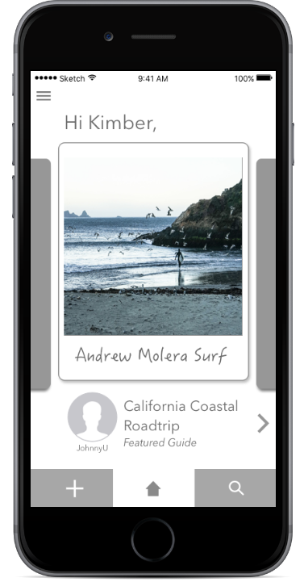
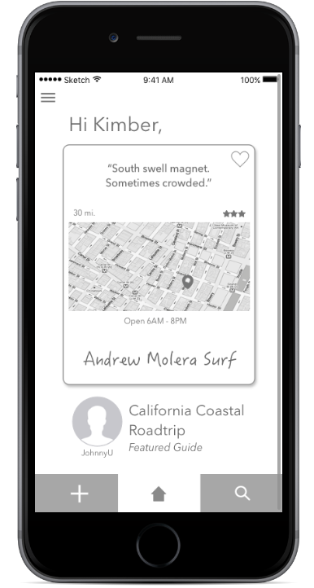

SnapGuide
Photo guides to lead your travels
Our daily lives are structured by routines that bring order and efficiency to our days and work. We travel to experience newness and purposefully set aside these routines that make our lives easier. Traveling puts known comforts and the thrill of discovery at odds.
 SnapGuide is a mobile collection of photo travel guides created by other travelers. It enables travelers to spontaneously find things to do and see while on the road. SnapGuide aims to make traveling personal and fulfilling.
my role
I created SnapGuide over 6-weeks for a UX design course. My task was to address a problem users have with online or mobile services that they use to support their travel.
I oversaw the full creation of this project from conducting user interviews and analyzing the results, to making wireframes, prototypes, and performing usability tests that informed my redesigns. By working through each stage of design for SnapGuide I experienced how every phase impacts others phases and the final product.
it's hard to make plans from a distance
Planning a travel itinerary remotely is difficult to do even with the help of the internet. While there are countless travel resources available to travelers today the most accurate information is available to a traveler when she arrives at her travel destination. Additionally although some planning is still necessary to ensure a fulfilling experience travel is most rewarding when there is room for serendipity.
Before sitting down to talk with travelers I had thought that one of the most frustrating parts of travel planning was the process of researching and booking flights, particularly for international travel. I quickly found out that this was not a primary concern for travelers.
talking to people who travel
“I want to get a full experience but I don't really know where to start.”
“As soon as I get there it will be very apparent what I should have done and if I made the right decision or the wrong decision.”
“I was interested in finding out of the way things that were interesting to me. I could spend whole days bouncing between coffee shops and bookstores ... and that was a great day to me.”
It only took a few conversations to learn that although coordinating logistics such as flights and accomodations came with certain challenges users still felt in control because they had tools to address these issues. Much stronger emotions were expressed when people spoke about their anxiety of missing out on fulfilling experiences or revealed their concerns about making the right planning choices for themselves personally. The challenge lay not only in finding things to do and places to see, but also in how enriching those experiences were to the individual. To cap it off travelers were aware that they do not always know what they are looking for.
Key Findings
- People struggled with authoritative guides such as the Lonely Planet. While such comprehensive guides provide a good starting point to outline trip activities, it also emphasizes all that a traveler is unable to accomplish in her limited timeframe.
- Quirky and personal travel suggestions by other travelers or local guides can be more compelling
- Local knowledge is invaluable. People travel to places their friends or relatives are living as a starting point for their trips.
- Online reviews and even personal recommendations are taken with a grain of salt. The best way to discover a place is yourself.
meet ian
I created Ian, a persona that embodied the characteristics, behaviors and needs of my target user by drawing from my initial interviews. By referring back to Ian's goals I was able to focus on the features I needed to develop for an MVP to meet his needs.

***Ian needs a way to find things to do in real-time so he can maximize his travels in a way that feels meaningful to him.
reaching an mvp
Employing a lean UX method. I approached this project with a focus of obtaining user feedback early and often. Through a combination of sketching and rapid prototyping I was able to quickly test and retest my designs to align with user needs and expectations.
Primary Features
**explain photo based searches etc.
User Flow
I started with this basic user flow that shows a user accomplishing one of two paths: discovering an activity or item of interest by location or with filters, or adding a new post of their own to share with other users.

IA sitemapping; before / after
a bit of a bumpy start
I started by drawing out a host of ideas without limiting myself to particular elements or functionalities. Although multiple travelers had mentioned performing image searches to get travel inspiration I also wanted to explore any range of options. Some of these ideas included a messaging service to connect with nearby travelers as well as a map-based itinerary which generated nearby landmarks and actiivties.
From here I built-out an idea for a photo-oriented review app and conducted a paper prototype test with 3 participants to gather a preliminary round of data.

What I discovered...
It was unclear to participants how the staggered system of first saving and then reviewing items worked. The separate interactions of saving an item of interest into a list and then returning to review a positive experience felt clunky. There was also sometimes too much happening on one screen for testers to know how to advance to another screen. However participants loved the whimsical feel of the photo-centric screens and contrasted them to text heavy review sites such as TripIt or Yelp.
designing, listening, testing
***Participants also relied heavily on the sparse information I provided for each item to make decisions and actions.